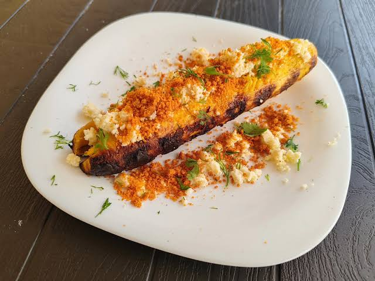
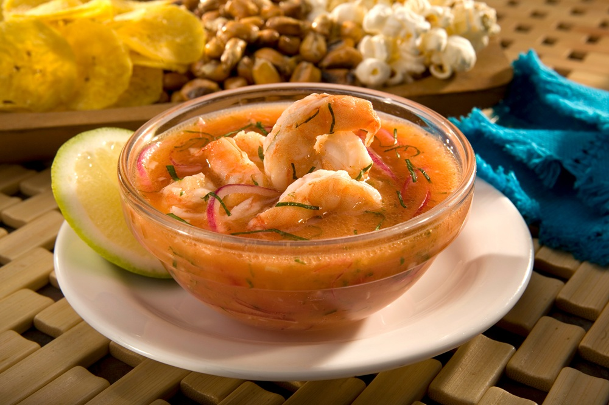

1. Descripción e historia del cantón
Ventanas es un cantón ubicado en la provincia de Los Ríos, en la región Costa del Ecuador. Es conocido como la Capital Maicera del Ecuador debido a su importante producción de maíz y a sus actividades agrícolas.
Su historia se remonta a la época colonial. Inicialmente fue un pequeño caserío que, con el paso del tiempo, creció hasta convertirse en una parroquia del cantón Puebloviejo.
Después de varios esfuerzos de sus habitantes por conseguir su independencia administrativa, Ventanas fue cantonizado oficialmente el 10 de noviembre de 1952.
2. Parroquias del cantón
Parroquias urbanas
- Ventanas (cabecera cantonal).
- 10 de Noviembre.
Parroquias rurales
- Zapotal.
- Chacarita.
- Los Ángeles.
Estas parroquias forman parte de la organización territorial del cantón y cuentan con comunidades dedicadas principalmente a las actividades agrícolas.
3. Actividades económicas y gastronomía
La agricultura es una de las principales actividades económicas de Ventanas. Sus tierras fértiles permiten cultivar productos que se comercializan en diferentes lugares del Ecuador.
Principales productos agrícolas
- Maíz.
- Arroz.
- Cacao.
- Banano.
- Soya.
- Café.
- Yuca.
- Naranja.
- Mandarina.
- Maracuyá.
También son importantes la ganadería, el comercio y la venta de productos agrícolas.
Gastronomía típica
La gastronomía de Ventanas está relacionada con las tradiciones de la Costa ecuatoriana y la cultura montubia. Entre las preparaciones que se pueden encontrar están:
- Arroz con menestra y carne asada / frita.
- Maduro asado adobado.
- Sancocho de pescado.
- Ceviches.
- Tortas de choclo y mazamorra.




4. Lugares turísticos
Río Zapotal
Es uno de los elementos naturales más representativos de Ventanas. Atraviesa la ciudad y forma parte de su paisaje y de la historia de sus habitantes.
Río Sibimbe
Es un afluente relacionado con la historia comercial del cantón. Antiguamente fue utilizado como vía de transporte para el movimiento de productos y mercancías.
Monumento al Maíz
Se encuentra en el ingreso a la ciudad y representa la importancia de la producción de maíz para la economía y la identidad de Ventanas.
Monumento al Montuvio
Está ubicado en el parque 13 de Abril y representa la cultura montubia, sus tradiciones y su relación con las actividades del campo.
Iglesia del Sagrado Corazón de Jesús
Es uno de los espacios religiosos representativos de la ciudad y forma parte de su patrimonio arquitectónico y cultural.
Parroquia Zapotal
Es una parroquia rural con una larga historia. Se caracteriza por sus tierras fértiles, su producción agrícola y sus tradiciones.
Parroquia Los Ángeles
Es un sector rural que destaca por sus paisajes naturales, ríos, vegetación y actividades agrícolas.
Parroquia Chacarita
Es una parroquia rural del cantón donde sus habitantes desarrollan actividades agrícolas y comunitarias.
5. Hoteles y hospedaje
En Ventanas existen establecimientos de hospedaje para visitantes que llegan por actividades comerciales, familiares o turísticas.
Consultar hoteles en Ventanas6. Alcalde del cantón
Carlos Agapito Carriel Abad.
7. Población
Según el Censo de Población y Vivienda 2022 del Instituto Nacional de Estadística y Censos (INEC), el cantón Ventanas tiene 73.211 habitantes.
Sus habitantes se distribuyen entre las zonas urbanas y rurales. Una parte importante de la población trabaja en la agricultura, especialmente en el cultivo de maíz, arroz y cacao.
8. Ubicación geográfica
Ventanas se encuentra en la provincia de Los Ríos, en la región litoral del Ecuador. Su territorio cuenta con ríos y tierras fértiles que favorecen la producción agrícola.
Mapa del cantón Ventanas
9. Fiestas y tradiciones
Las fiestas de cantonización se celebran cada 10 de noviembre. Durante esta fecha se realizan desfiles cívicos, eventos culturales, presentaciones artísticas y actividades populares.
También se mantienen las tradiciones de la cultura montubia, relacionadas con la agricultura, la música, la gastronomía y las costumbres de las comunidades rurales.